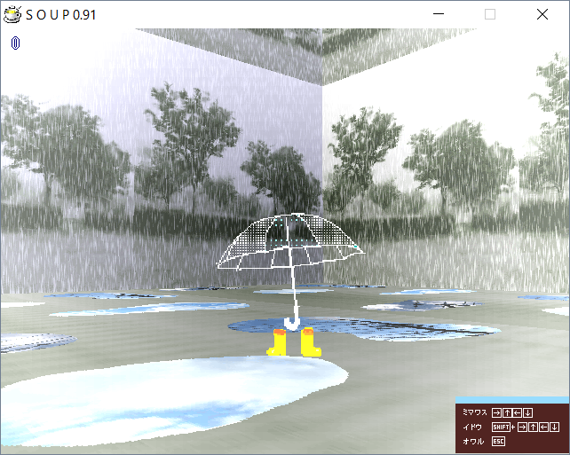

| Photo |  |
| Day | 3 |
| Internal Name | sssroom0 |
| Creator | Sasa Sasaki |
| Prefix | sss |
Rainy Room (sssroom0) is a room accessible from Day 3. It was made by Sasa Sasaki.
The room is seemingly set during a rain, with stepping noises audible in the background. Puddles are seen on the floor, which show utility poles. The floor reappears in Droplet Room from Day 4.
The object seems to be that of a white umbrella, which bright yellow rain boots.
◄ Technology Room (suproom0) | Go back to Rooms | Library Room (tarroom3) ►